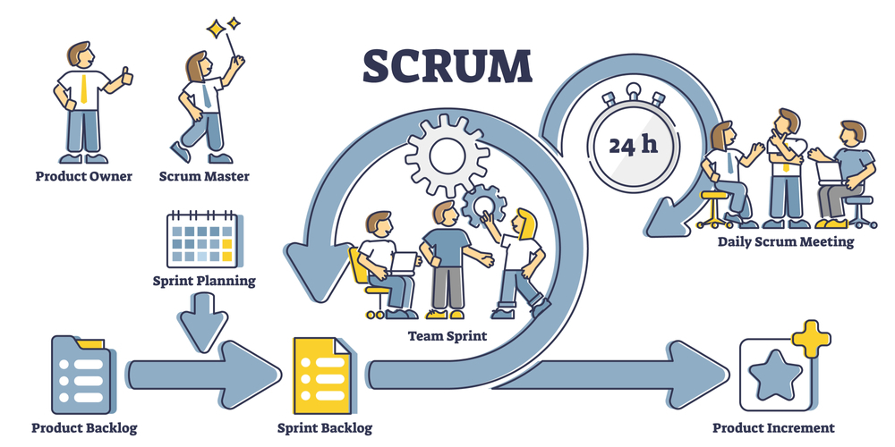

Hva er agile metoder?
Agile metoder er mer fleksible enn tradisjonelle metoder som fossefallsmetoden. De legger vekt på rask respons på endringer, kontinuerlige tilbakemeldinger fra brukere og hyppige leveranser av funksjonelle deler av systemet. (Kendall & Kendall, 2020)
I stedet for en lineær og rigid prosess som i fossefallsmetoden, bruker agile metoder iterasjoner eller korte utviklingssykluser (også kalt sprinter). Dette gjør at prosjektgrupper kan utvikle, teste og forbedre systemet over tid. Agile metoder er spesielt godt egnet for prosjekter med komplekse krav som kan endres underveis.
Agile metoders verdier er beskrevet i «Agile Manifesto» (2001), som legger frem fire kjerneverdier:
- Individer og interaksjoner fremfor prosesser og verktøy.
- Fungerende programvare fremfor omfattende dokumentasjon.
- Samarbeid med kunden fremfor kontraktsforhandlinger.
- Respondere på endringer fremfor å følge en plan.
Scrum
Scrum er en av de mest kjente agile metodene. Den har fem sentrale elementer som bidrar til å organisere og effektivisere prosessen:
-
Roller i Scrum: Det er tre roller i prosjekter
som bruker Scrum:
- Produkteier: Ansvarlig for å prioritere funksjoner og oppgaver i backloggen.
- Scrum Master: Leder og tilrettelegger som sikrer at Scrum-prosessen følges, og hjelper teamet med å fjerne hindringer.
- Utviklingsteam: Samarbeider for å utvikle funksjoner og levere et produkt eller deler av et produkt i hver sprint.
- Sprint: En tidsavgrenset periode (1-4 uker) der gruppen jobber med forhåndsbestemte oppgaver fra backloggen. Sprinten avsluttes med leveranse og evaluering.
- Backlog: En dynamisk liste over oppgaver og funksjoner som skal utvikles, prioritert av produkteier.
- Daglige stand-up møter: Korte, daglige møter (ca. 15 minutter) for å diskutere fremdrift, utfordringer og planene for dagen.
- Sprint review og retrospective: På slutten av hver sprint demonstrerer gruppen det de har utviklet for produkteier og interessenter, samt evaluerer hva som kan forbedres i samarbeidet og prosessen fremover.